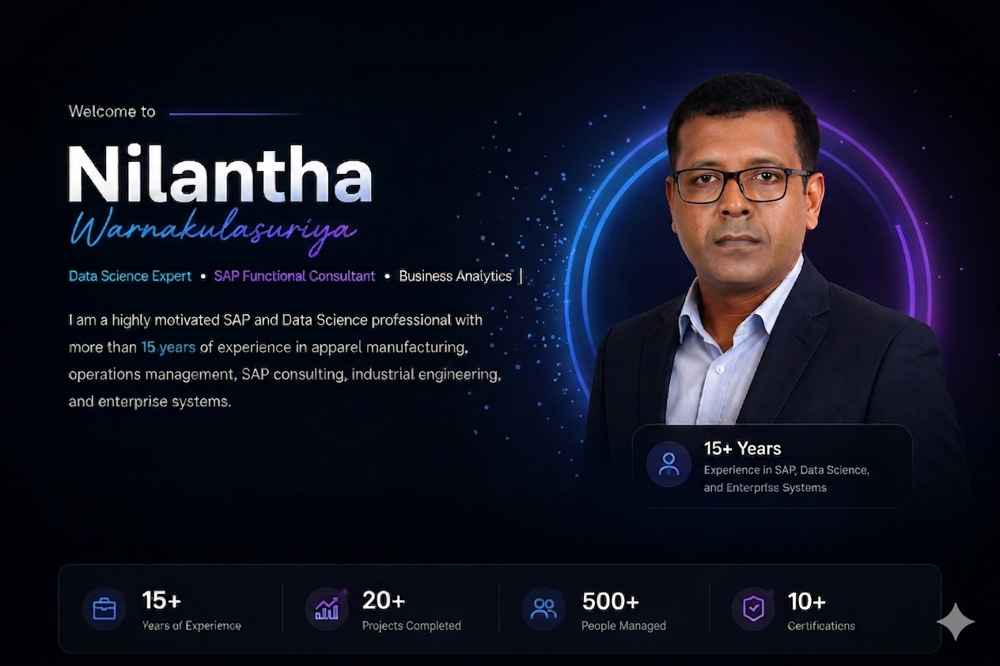

WHO I AM
I am a highly motivated SAP and Data Science professional with more than 15 years of experience in apparel manufacturing, operations management, SAP consulting, industrial engineering, and enterprise systems.
I am passionate about leveraging data and technology to drive business insights, optimize processes, and solve complex problems. With a strong background in SAP MM, PP, and PM modules, currently expanding my expertise through Machine Learning and Data Science capstone projects, focusing on data-driven decision-making, predictive analytics, and modern business solutions.
Lac La Biche, Alberta, Canada
nilanthaous@hotmail.com
English / Sinhala
Remote & Visa Sponsored Roles
WHAT I WORK WITH
WHAT I'VE BUILT
ARIMA & Prophet models for time series prediction and business planning.
Python • PandasK-Means clustering for targeted marketing and customer analytics.
Python • MLStock prediction model with interactive Power BI dashboard Visualization.
SQL • Power BIComprehensive data analysis and visualization dashboard project.
Python • DataEnd-to-end SAP implementation project for a manufacturing client.
SAP • ConsultingMY CAREER JOURNEY
ACADEMIC & PROFESSIONAL
The Open University of Nawala, Sri Lanka
2017 – 2019The Open University of Nawala, Sri Lanka
2004 – 2009HEALTH CARE & VOCATIONAL QUALIFICATIONS
Patient Care Skills
2019GET IN TOUCH
Email nilanthaous@hotmail.com
Phone +1 647-928-7651
LinkedIn linkedin.com/in/nilantha-warnakulasuriya-40310173